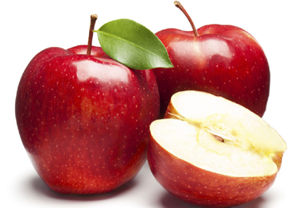

আপেলের পরিচিতি
ইংরেজিতে একটি প্রবাদ রয়েছে - An apple a day, keeps doctor away! প্রবাদটি থেকেই বোঝা
যায় যে ফল হিসেবে আপেলের গুরুত্ব কতখানি! এ কারণেই বোধহয় নানান রোগে পথ্য হিসেবে
রোগীকে আপেল খাওয়ানো হয়ে থাকে! আপেল বিদেশী ফল হলেও আমাদের দেশে সুপরিচিত এবং বেশ
জনপ্রিয়। সহজলভ্য অথচ দাম নাগালের মধ্যে এমন সব ফলের ভেতর আপেলকেই প্রায় সব শ্রেণীর
মানুষ অভিজাত ফল হিসেবে গণ্য করে থাকে। তাই কুটুমবাড়ি বলুন, আর রোগী দেখতে হাসপাতালে
যাওয়া বলুন, আপেল হাতে চলে যাওয়া যায় সহজেই!

আপেলের ইংরেজি নাম হলো Apple এবং এর বৈজ্ঞানিক নাম হলো Malus domestica। আপেলের আদি
নিবাস মধ্য এশিয়ায়। আধুনিক আপেলের বুনোরূপ Malus sieversii এই এলাকায় পাওয়া যায়
এখনো! হাজার বছর ধরে এশিয়া ও ইউরোপে আপেলের চাষ হয়ে আসছে। পরে তা ছড়িয়ে পড়ে উত্তর
আমেরিকাসহ আরো অনেক দেশে। চীন, আমেরিকা, পোল্যান্ড, ইটালি, চিলি, ফ্রান্স, রাশিয়া,
জার্মানি, ইংল্যান্ড, নেদারল্যান্ড, নিউজিল্যান্ড ও অস্ট্রেলিয়ায় প্রচুর পরিমাণে আপেল
উত্পাদন করা হয়।
আপেলের পুষ্টি উপাদান
খোসাসহ আপেলের খাদ্যযোগ্য প্রতি ১০০ গ্রাম অংশে রয়েছে - খাদ্যশক্তি- ৫২ কিলোক্যালরি, শর্করা- ১৩.৮১ গ্রাম, চিনি- ১০.৩৯ গ্রাম, খাদ্যআঁশ- ২.৪ গ্রাম, চর্বি- ০.১৭ গ্রাম, আমিষ- ০.২৬ গ্রাম, জলীয় অংশ- ৮৫.৫৬ গ্রাম, ভিটামিন এ- ৩ আইইউ, বিটা ক্যারোটিন- ২৭ আইইউ, লুটেইন- ২৯ আইইউ, থায়ামিন- ০.০১৭ মিলিগ্রাম ,রিবোফ্লেভিন- ০.০২৬ মিলিগ্রাম, নিয়াসিন- ০.০৯১ মিলিগ্রাম, প্যানটোথেনিক অ্যাসিড- ০.০৬১ মিলিগ্রাম, ফোলেট- ৩ আইইউ, ভিটামিন সি- ৪.৬ মিলিগ্রাম, ভিটামিন ই- ০.১৮ মিলিগ্রাম, ভিটামিন কে- ২.২ আইইউ, ক্যালসিয়াম- ৬ মিলিগ্রাম, আয়রন- ০.১২ মিলিগ্রাম, ম্যাগনেসিয়াম- ৫ মিলিগ্রাম, ম্যাংগানিজ- ০.০৩৫ মিলিগ্রাম, ফসফরাস- ১১ মিলিগ্রাম, পটাশিয়াম- ১০৭ মিলিগ্রাম, সোডিয়াম- ১ মিলিগ্রাম, জিংক- ০.০৪ মিলিগ্রাম, ফ্লোরাইড- ৩.৩ আইইউ.
আপেলের উপকারীতা
খেতে খুবই সুস্বাদু, সহজে ক্ষুধা নিবারণ করতে এই ফলের জুড়ি নেই। অন্য ফাস্ট ফুড বা
মিষ্টি খাবার খাওয়ার চেয়ে, মিষ্টি, কচকচে আপেল খেয়ে ক্ষুধা নিবারণ করা অনেক ভালো । কারন
এতে মাত্র ৭০-১০০ ক্যালরি আছে। অফিসে, কাজের ফাকে বা পড়াশুনার ফাঁকে স্ন্যাকস হিসাবে
একটি আপেল খেয়ে নিতে পারেন।
এতে প্রচুর ফাইবার আছে, যা হজমের জন্য ভালো। তাই পাস্কস্থলী পরিষ্কার রেখে, কোলন
ক্যান্সার হতে দেয় না।
আপেলে পেকটিন নামক ফাইবার আছে, যা সহজে তরলে মিশে যায়। এই ফাইবার অন্ত্র নালিতে
কোলেস্টরল জমতে দেয় না, এবং শরীর থেকে গ্লুকোজ কমাতে সাহায্য করে। এটি ক্ষুধা নিয়ন্ত্রণ
করতেও সাহায্য করে।
আপেলে পর্যাপ্ত বোরন আছে, যা হাড়কে শক্ত রাখতে সাহায্য করে ও ব্রেইনের স্বাস্থ্য ঠিক
রাখে
আপেলে আছে এন্টিঅক্সিডেন্ট এটি রোগ প্রতিরোধ শক্তি বৃদ্ধি করে, হার্টের অসুখ ও
ক্যান্সার হতে রক্ষা করে
আপেলে প্রচুর পাইথোনিউট্রিয়ান্টস, যেমন: ভিটামিন এ, ইও বিটাক্যারোটিন আছে। এগুলো ফ্রি
র্যাডিকেল ধ্বংষ হতে, ব্রেইনের অসুখ হতে বাধা দেয়, ফুসফুস ভালো রাখে ও শ্বাস প্রশ্বাস
প্রক্রিয়া ভালো রাখে । ফলে শরীর অনেক রোগ থেকে মুক্তি পাওয়া যায়।
অন্যান্য ফলের মত আপেলের চিনি রক্তের চিনির মাত্র বাড়িয়ে দেয় না। ফলে ডায়াবেটিকের
রোগীরা নিশ্চিন্তে পরিমানমত আপেল খেতে পারেন ।
আপেলে কোনো লবন নেই, তাই আপেল থেকে অতিরিক্ত লবন খাবার কোনো সম্ভাবনা নেই।
আপেলে সামান্য ভিটামিন সিও আছে। তাই আপেল রোগ প্রতিরোধেও সাহায্য করে । তাছাড়া ভিটামিন
সি তাড়াতাড়ি রোগ সারাতে সাহায্য করে।
আপেল লিভার ও কিডনি পরিষ্কার রাখে, এর পাথর দূর করে বা ধ্বংষ করে
আপেলের প্রচুর পানি আছে, তাই এটি পানিশুন্যতা দূর করে, তৃষ্ণা মেটায় ও শরীর ঠান্ডা করে।
জ্বর হলে তা কমাতে সাহায্য করে, তাই জ্বর এর রোগীরা আপেল খেলে ভালো বোধ করেন।
আপেলের সাথে মধু মিশিয়ে খেলে তা কফ দুর করে।
ডায়রিয়া হলে তা সারাতে সাহায্য করে।
মাসেল টোন করতে সাহায্য করে ও ওজন কমায়
আপেলের রস দাঁতের জন্য ও ভালো। কারণ ব্যাকটেরিয়া এর কারণে দাঁতের ক্ষয় হয়, আপেলের রস
৮০% পর্যন্ত দাঁতের ক্ষতিকর ব্যাকটেরিয়া ধ্বংষ করতে পারে।